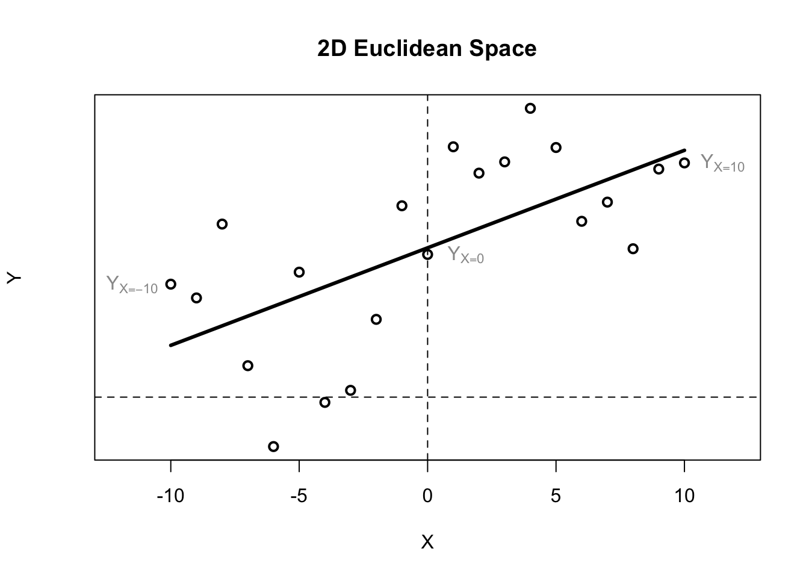
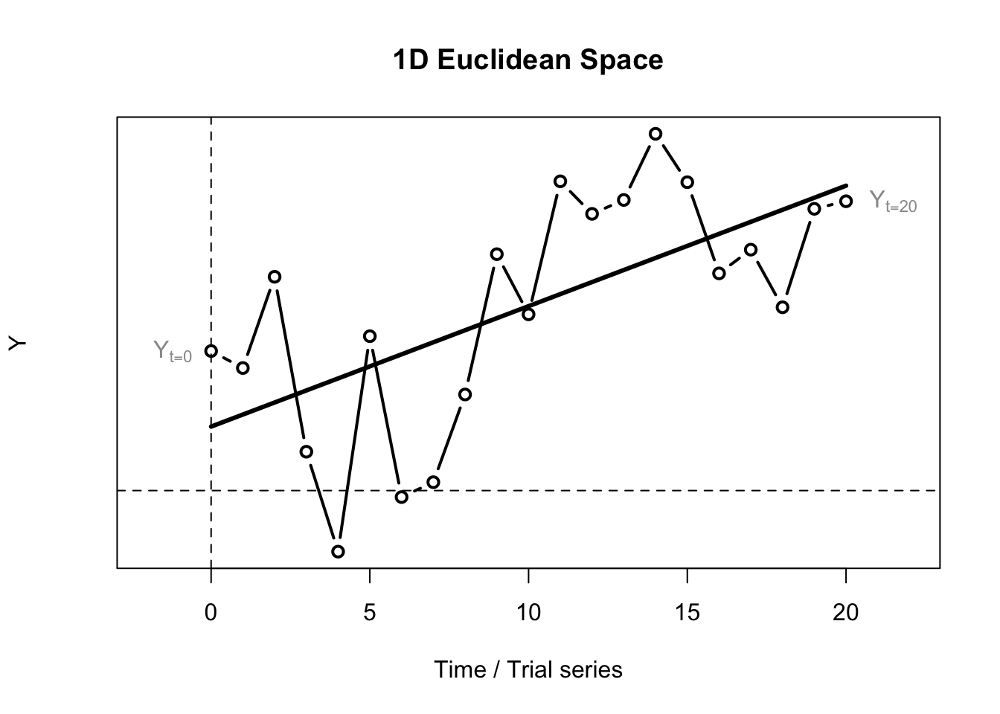

3.1 Stat(ist)ic versus Dynamic Models
The simplest non-trivial iterative change process can be described by the following difference equation:
\[ Y_{t+1} = Y_{t=0} + a*Y_t \]
The equation describes the way in which the value of \(Y\) changes between two adjacent, discrete moments in time (hence the term difference equation, or recurrence relation). There are two parameters resembling an intercept and a slope:
- The starting value \(Y_0\) at \(t=0\), also called the starting value, or the initial conditions.
- A rule for incrementing time, here the change in \(Y\) takes place over a discrete time step of 1: \(t+1\).
The values taken on by variable \(Y\) are considered to represent the states quantifiable observable leAlternative ways to describe the change of states :
- A dynamical rule describing the propagation of the states of a system observable measured by the values of variable
Ythrough discrete time. - A dynamic law describing the time-evolution of the states of a system observable measured by the variable
Y.
These descriptions all refer to the change processes that govern system observables (properties of dynamical systems that can be observed through measurement).
3.1.1 It’s a line! It’s a plane!
The formula resembles the equation of a line. There is a constant value \(Y_{0}\) which is added to a proportion of the value of \(Y\) at time \(t\), given by parameter \(a\). This is equivalent to the slope of a line. However, in a \((X,Y)\) plane there are two ‘spatial’ (metric) dimensions representing the values two variables \(X\) and \(Y\) can take on (see figure).

The best fitting straight line would be called a statistical model of the linear relationship between the observed values of \(X\) and \(Y\). It can be obtained by fitting a General Linear Model (GLM) to the data. If \(X\) were to represent repeated measurements the multivariate GLM for repeated measures would have to be fitted to the data. This can be very problematic, because statistical models rely on Ergodic theory:
“… it is the study of the long term average behavior of systems evolving in time.”
need to assume independence of measurements within and between subjects. These assumptions can be translated to certain conditions that must hold for the model to be valid, known as Compound Symmetry and Sphericity:
The compound symmetry assumption requires that the variances (pooled within-group) and covariances (across subjects) of the different repeated measures are homogeneous (identical). This is a sufficient condition for the univariate F test for repeated measures to be valid (i.e., for the reported F values to actually follow the F distribution). However, it is not a necessary condition. The sphericity assumption is a necessary and sufficient condition for the F test to be valid; it states that the within-subject “model” consists of independent (orthogonal) components. The nature of these assumptions, and the effects of violations are usually not well-described in ANOVA textbooks;2
As you can read in the quoted text above, these conditions must hold in order to be able to identify unique independent components as the sources of variation of \(Y\) over time within a subject. This is the a clear example of:
If you choose to use GLM repeated measures to model change over time, you will only be able to infer independent components that are responsible for the time-evolution of \(Y\). As is hinted in the last sentence of the quote, the validity of such inferences is not a common topic of discussion statistics textbooks.
3.1.2 No! … It’s a time series!
The important difference between a regular 2-dimensional Euclidean plane and the space in which we model change processes is that the \(X\)-axis represents the physical dimension time. In the case of the Linear Map we have a 1D space with one ‘spatial’ dimension \(Y\) and a time dimension \(t\). This is called time series if \(Y\) is sampled as a continuous process, or a trial series if the time between subsequent observations is not relevant, just the fact that there was a temporal order (for example, a series of response latencies to trials in a psychological experiment in the order in which they were presented to the subject).

Time behaves different from a spatial dimension in that it is directional (time cannot be reversed), it cannot take on negative values, and, unless one is dealing with a truly random process, there will be a temporal correlation across one or more values of \(Y\) seperated by an amount of time. In the linear difference equation this occurs because each value one step in the future is calculated based on the current value. If the values of \(Y\) represent an observable of a dynamical system, the system can be said to have a history, or a memory.
Ergodic systems do not have a history or a memory that extends across more than one time step. This is very convenient, because one can calculate the expected value of a system observable given infinite time, by making use of of the laws of probabilities of random events (or random fields). This means: The average of an observable of an Ergodic system measured across infinite time (its entire history, the time-average), will be the be the same value as the average of this observable measured at one instance in time, but in an infinite amount of systems of the same kind (the population, the spatial average) [^dice].
The simple linear difference equation will have a form of perfect memory across the smallest time scale (i.e., the increment of 1, \(t+1\)). This ‘memory’ just concerns a correlation of 1 between values at adjacent time points (a short range temporal correlation, SRC), because the change from \(Y_t\) to \(Y_{t+1}\) is exactly equal to \(a * Y_t\) at each iteration step. This is the meaning of deterministic, not that each value of \(Y\) is the same, but that the value of \(Y\) now can be perfectly explained form the value of \(Y\) one moment in the past.
Summarising, the most profound difference is not the fact that the equation of linear change is a deterministic model and the GLM is a probabilistic model with parameters fitted from data, this is something we can (and will) do for \(a\) as well. The profound difference between the models is the role given to the passage of time:
- The linear difference equation represents changes in \(Y\) as a function of the physical dimension time and \(Y\) itself.
- The GLM represents changes in \(Y\) as a function of a linear predictor composed of additive components that can be regarded as independent sources of variation that sum up to the observed values of \(Y\).